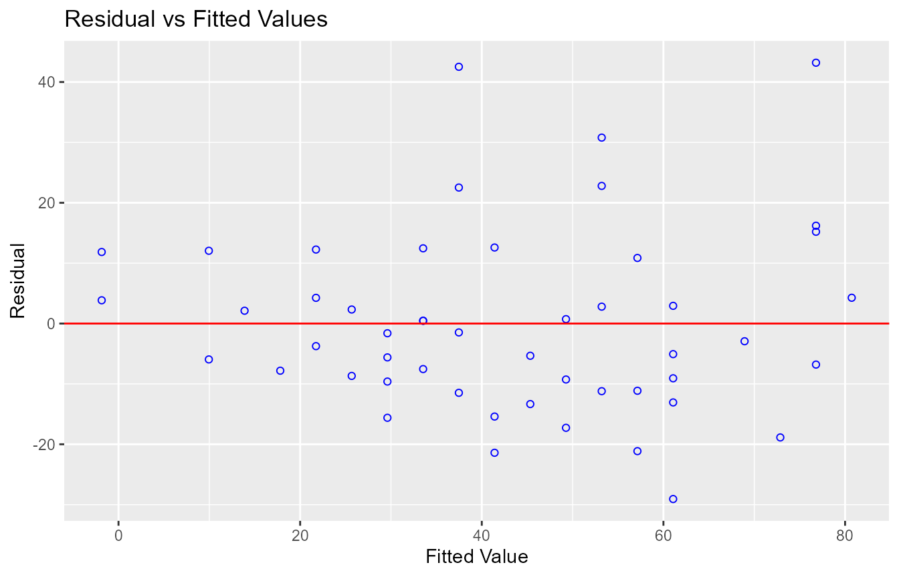
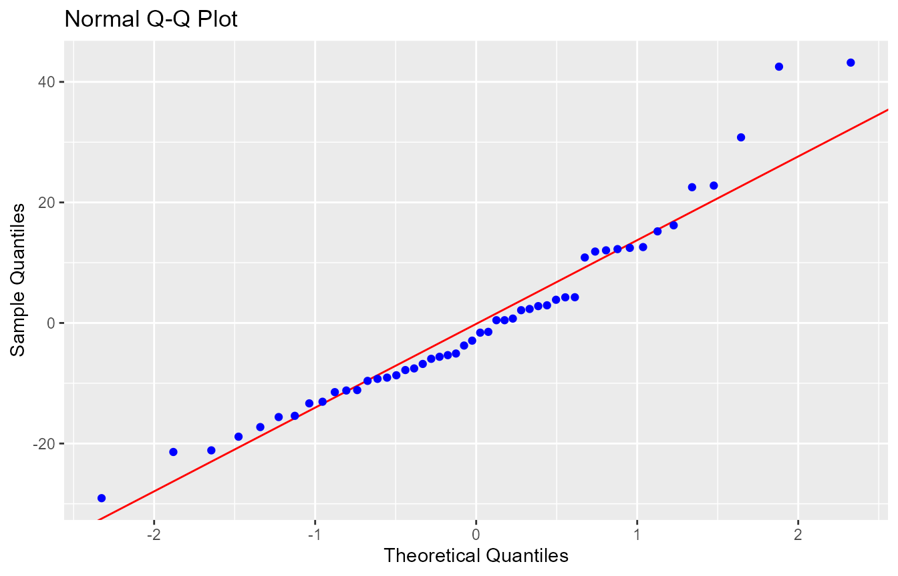

What does a braking-distance model miss?
Source:vignettes/residual-diagnostics.Rmd
residual-diagnostics.RmdDoes a straight line capture how stopping distance changes with speed? We will fit one model and read two residual plots. The main finding is that the residual spread grows across the fitted distances, with a long positive tail. Those features give us specific questions to investigate before trusting the model’s usual uncertainty calculations.
Understand the data and fit
Example data: R’s built-in cars dataset
These are 50 observations recorded in the 1920s, with speed in miles
per hour (speed) and stopping distance in feet
(dist). The speeds range from 4 to 25 miles per hour. This
historic example is useful for learning diagnostics; it does not
describe modern vehicles or a road-safety standard. There are repeated
speeds, and the original row numbers identify observations.
library(olsrr)
braking_data <- datasets::cars
stopifnot(nrow(braking_data) == 50L, !anyNA(braking_data))
head(braking_data)
#> speed dist
#> 1 4 2
#> 2 4 10
#> 3 7 4
#> 4 7 22
#> 5 8 16
#> 6 9 10
braking_model <- lm(dist ~ speed, data = braking_data)
coef(braking_model)
#> (Intercept) speed
#> -17.579095 3.932409The fitted slope is about 3.93 feet per additional mile per hour. That average linear association leaves residuals: each observed distance minus its fitted distance. A positive residual means a longer stopping distance than the model predicts. Although R-squared is about 0.65, it cannot tell us whether the residual pattern is acceptable for a particular use.
The assumptions concern unobserved model errors, conditional on the predictors. Fitted residuals are estimates of those errors. Fitting an intercept forces their sum to zero, and estimating the coefficients makes them dependent and gives them different variances even under a constant error variance. Do not call fitted residuals independent errors or treat their zero mean as evidence that the conditional mean is correctly specified.
Look for shape and changing spread
ols_plot_resid_fit(braking_model)
Stopping-distance residuals against fitted distance for cars; both axes are in feet.
The left side has a relatively narrow band of residuals. Farther right, both positive and negative residuals spread out, including positive values above 40 feet and a negative value near -30 feet. A constant-width band would be more compatible with constant error variance. This widening suggests investigating whether the variability changes with speed.
Read shape separately from spread. A systematic bend in the center of the residual cloud would suggest that a straight-line mean is missing structure. This plot has enough scatter that we should investigate a curved mean rather than declare a particular curve established. The negative intercept also gives implausible negative fitted distances at the lowest speeds. A plausible mean function and a sensible prediction range deserve attention alongside the variance question.
A large residual is a prompt to inspect the observation and its context. It does not tell us to delete a row. Check the original measurement and compare any proposed refit on the same observations before deciding what the pattern means.
Compare the residual distribution with normality
ols_plot_resid_qq(braking_model)
Normal Q-Q plot of the braking model’s residuals, measured in feet.
The middle observations are fairly close to the reference line, while several upper-tail points rise above it. This long positive tail is a departure from the normal shape. A Q-Q plot helps locate that departure; it does not establish its cause. An incorrect mean, changing variance or unusual observations can all affect the residual distribution.
Normal errors are relevant to exact small-sample t and F inference under the usual assumptions. Normality is not required merely to calculate OLS coefficients. Neither plot checks independence: that question needs knowledge of how the observations were collected, and sometimes plots against collection order or another relevant grouping.
Choose the next investigation
The two plots point to changing spread and an upper-tail departure. Continue with variance and normality tests using this same model, while keeping those visual findings in view. Tests can quantify evidence against specified nulls; they cannot choose a transformation or certify the entire model.
For other views, consult these function help pages rather than producing many charts without a question:
| Question | Function |
|---|---|
| View several diagnostic summaries together | ols_plot_diagnostics() |
| Inspect the residual distribution as bars or a box plot |
ols_plot_resid_hist(),
ols_plot_resid_box()
|
| Inspect the observed response before fitting | ols_plot_response() |
| Draw a simple regression line from response and predictor vectors | ols_plot_reg_line(braking_data$dist, braking_data$speed) |
Return to regression output for coefficient and RMSE interpretation. Preserve the fitted model and row identities as you move between tables and plots, so each check answers a question about the same observations.